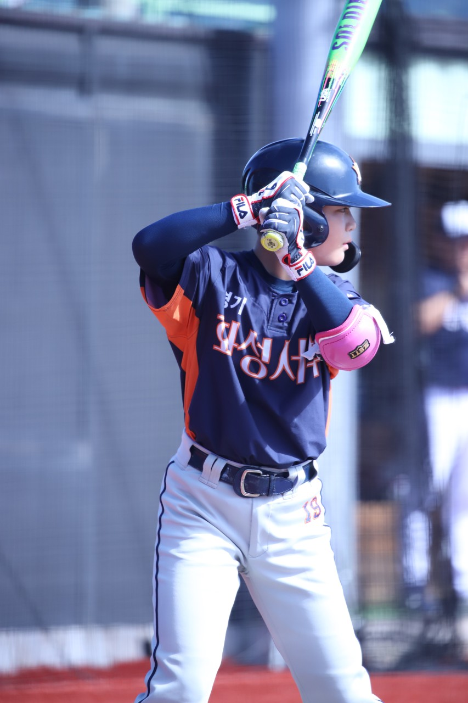
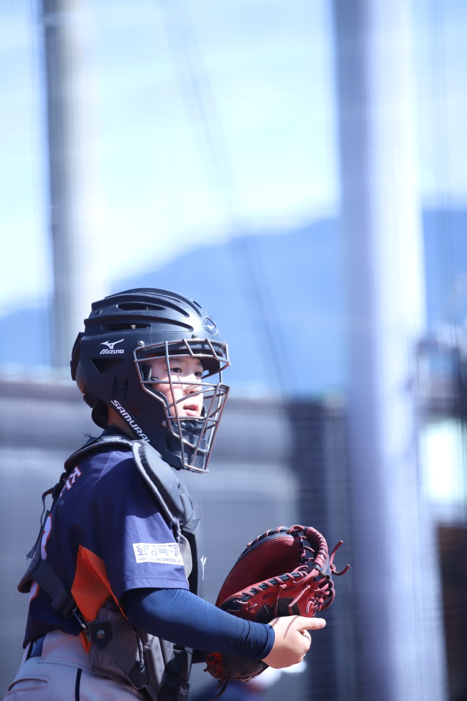

아직 야구가 낯선 아이들이,
재미있게 첫걸음을 떼는 곳입니다.
잘하는 것보다, 먼저 즐기는 것을 가르칩니다.
야구를 처음 접하는 아이도, 운동을 잘 못하는 아이도 괜찮습니다.
공을 던지고 받고 치는 기본 동작부터, 천천히 그리고 확실하게 익혀갑니다.

초등학생의 몸과 눈높이에 맞춘 강도로 운영합니다.
무리한 훈련이 아니라, 성장 시기에 맞는 만큼만 — 부상 없이 운동할 수 있도록 신경 씁니다.
기초 체력과 기본기가 쌓이면, 선수반에서 더 체계적인 훈련을 이어갈 수 있습니다.
육성반은 그 시작점이자, 아이가 야구를 진짜로 좋아하게 되는 시간입니다.

모든 프로선수도, 처음엔 공을 처음 잡아본 아이였습니다.
화성서부리틀야구단 육성반에서 그 첫걸음을 함께하세요.